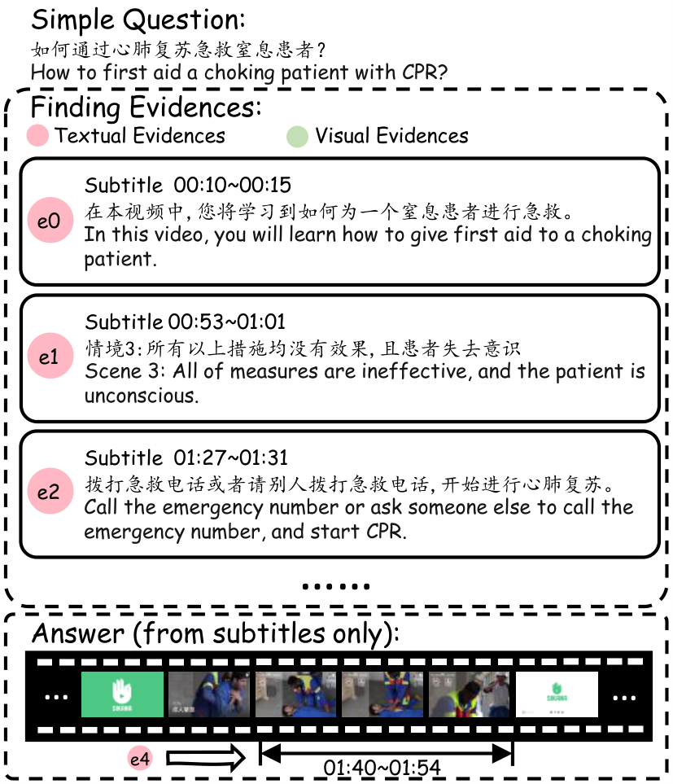
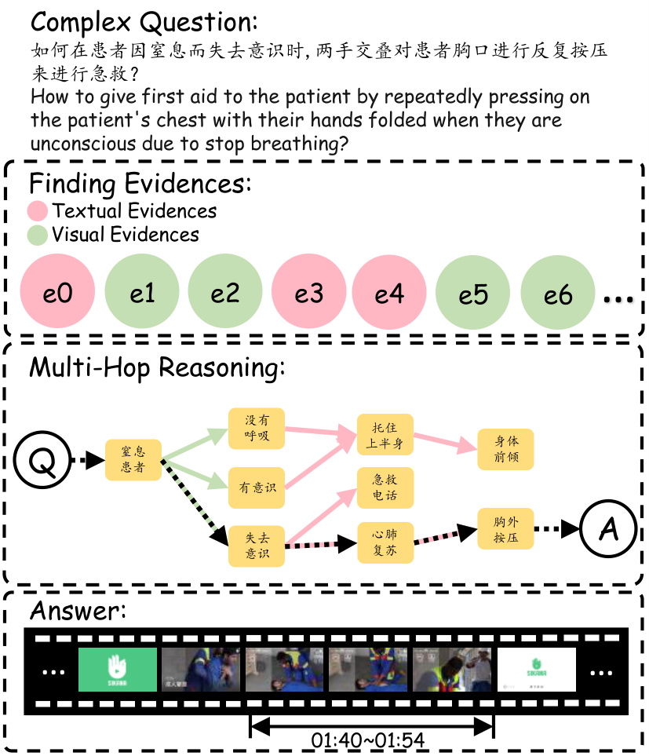

Abstract
With the progress of artificial intelligence (AI) in multi-modal understanding, the application potential of video understanding and localization technology in professional fields such as medical teaching is increasing rapidly. So, the need for benchmarks to test the video understanding and localization capabilities of AI models appears. However, existing such benchmarks always focus on the English corpus, ignoring the needs of global medicine. Also, they mostly focus on the retrieval of subtitles, and the models can achieve good results only through one-step text matching or shallow semantic understanding, which limits the evaluation of the models’ ability. To address those problems, we propose M3-Med, the first benchmark for multi lingual, multi-modal, multi-hop reasoning in medical instructional video understanding. This benchmark is constructed by a team of medical experts, containing a series of medical questions and corresponding video segments as answers. The core innovation is that we divide the questions into two categories: simple questions and complex questions. To solve complex questions correctly, the model must have the ability to construct a cross-modal knowledge graph (KG) that connects visual and textual elements, and perform multi hop reasoning. Referring to a similar benchmark, we designed two tasks: Temporal Answer Grounding in Singe Video (TAGSV) and Temporal Answer Grounding in Video Corpus (TAGVC). We have tested several advanced models, including text-only large language models (LLMs) and multi-modal large language models (MLLMs), and human challengers on two tasks of this benchmark. The results show that M3-Med maintains a high degree of alignment with human judgment, posing a significant challenge to the existing state-of-the art models, especially for complex problems. This proves the effectiveness of M3-Med as an evaluation tool and reveals the limitations of current AI models in complex cross-modal reasoning capabilities. We believe that M3-Med will be a valuable resource to drive the next generation of video intelligence.
Dataset Access
Click the button below to download the complete dataset. The file is in .zip format.
Download M3-Med Dataset (M3Med.zip)Latest News
- [2025-06-13] NLPCC 2025 Shared Task 4, derived from this dataset, has been released. For details, see NLPCC 2025 Shared Task 4 🎉🎉🎉
Main Features
Multi-hop Reasoning
Introduces complex questions that require the model to perform multi-hop reasoning, not just text matching.
Multi-modal
Combines video visual information and text subtitles to evaluate cross-modal understanding capabilities.
Multi-lingual
Includes both Chinese and English to meet the needs of global medical research.
Question Examples
Simple Questions

Answers to simple questions can usually be found in a continuous segment of the video.
Complex Questions

Complex questions require the model to have a deeper level of understanding and reasoning. The model needs to integrate information and perform "multi-hop" reasoning.
Benchmark Construction
- Video Collection: Highly relevant medical teaching videos were selected from platforms like YouTube.
- Subtitle Construction: SRT format subtitle files were generated using the Whisper model.
- Question Writing and Review: Questions were written by professional doctors and rigorously reviewed by the team.
- Time-stamp Marking and Verification: The video segments corresponding to the answers were marked with timestamps, and quality was ensured through cross-referencing and consistency checks.